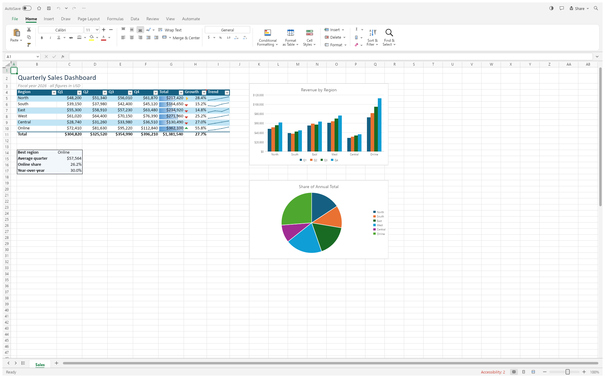
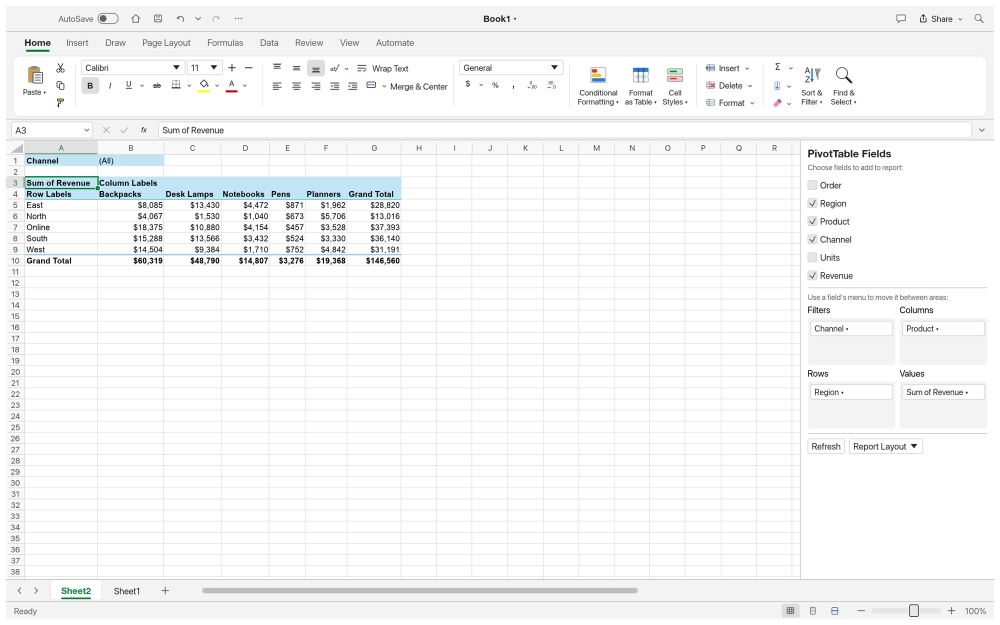
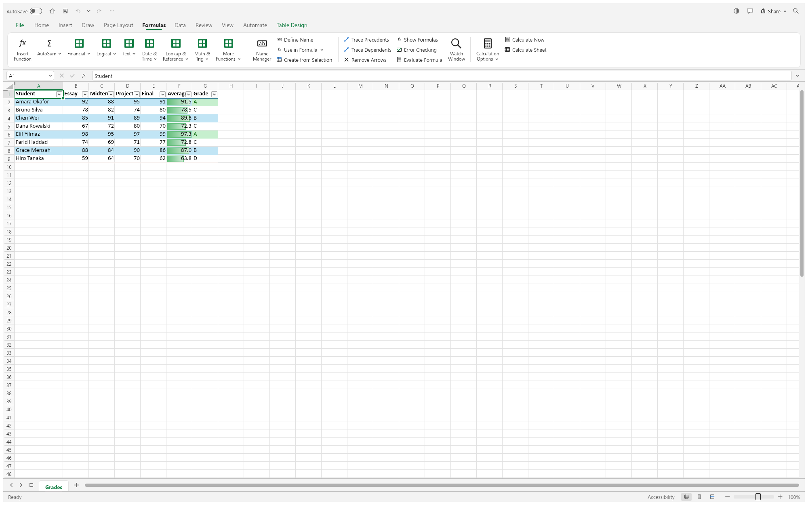
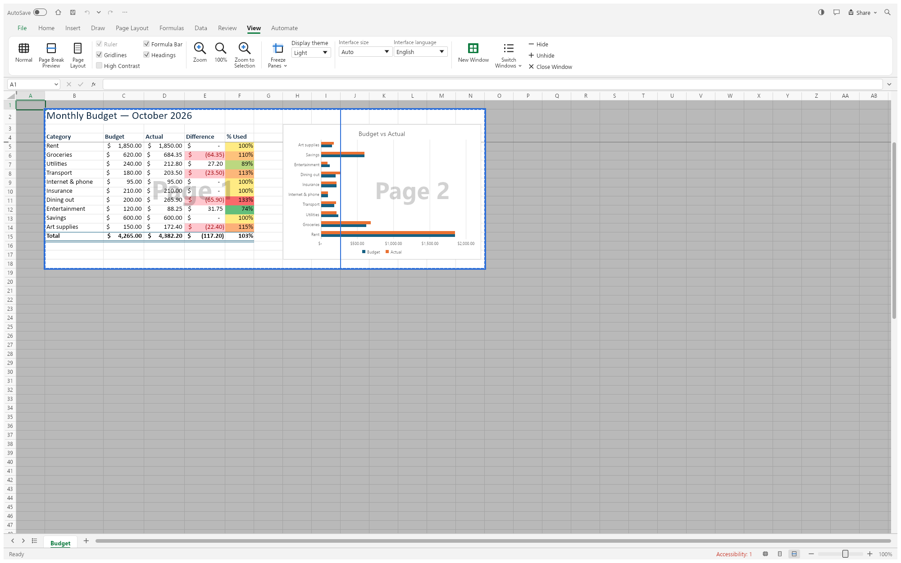

开源电子表格，支持脚本自动化
Cella 用 Rust 编写。核对公式、汇总销售数据，或从命令行批量编辑 .xlsx 工作簿。

- 桌面平台
- macOS、Windows、Linux 和 BSD
- 网页构建
- WebAssembly
- 开源许可
- MIT OR Apache-2.0
从明细到报表
在同一个工作簿里整理数据、核对结果，再生成报表。
- 公式计算
- 支持 500 多个函数，以及会自动溢出到相邻单元格的动态数组和表格结构化引用。
- 数据汇总
- 对表格排序和筛选，用数据透视表分组汇总，再把结果做成图表。








把销售明细做成报表
用六条样例订单做一张按地区汇总营收的数据透视表。结果另存为新工作簿，原始 CSV 不变。
Guide in English-
打开销售导出表
下载样例，在 Cella 中选择文件 → 打开。使用自己的 CSV 时，找到地区（
下载样例 CSVRegion）和营收（Revenue）对应的列，确认营收值是数字。 -
按地区汇总营收
选中含表头的数据区域（样例为
A1:D7），选择插入 → 数据透视表。在字段列表中勾选Region和Revenue，即可按地区求和。 -
另存为 XLSX
选择文件 → 另存为，保存为
sales-report.xlsx。新工作簿包含数据透视表，原始 CSV 保留不动。
同一套命令，四种用法
不用打开桌面窗口，也能生成同一份销售报表。桌面应用、CLI、MCP 服务和控制通道共用同一套命令。
insert.pivotTablecella-cli run --in sales-sample.csv \
--cmd 'insert.pivotTable={"source":"A1:D7",
"rows":["Region"],"values":["Revenue"]}' \
--out sales-report.xlsx在 sales-sample.csv 所在目录运行。
查看执行流程 重置演示
仅演示下方步骤，不执行命令，也不会修改文件。sales-sample.csv读取导出数据insert.pivotTable按地区汇总sales-report.xlsx写入新工作簿
百万行工作簿实测
在同一份约 70 MB 的 XLSX 上，Cella 打开得比 Excel 和 WPS 快；Excel 的重算更快，工作集也更小。
测的是什么？
同一份工作簿包含 100 万行、8 列和 200 万条公式。将 B1 改为 3 后，四个产品算出的末尾结果一致。
条形图只对比不额外触发完整重算的打开时间。上游 GridCraft 的记录把打开和完整重算计在一起，放在下表单独标出。
表格可横向滚动，查看其余产品数据。
| 项目 | Cella 0.13.0 | Excel 16.0.20527 | WPS 12.1.0.25222 | 上游 GridCraft v0.19.1 |
|---|---|---|---|---|
| 打开工作簿 | 3.1 秒 | 7.8 秒 | 11.7 秒 | 21.4 秒（含完整重算） |
| 完整重算 200 万条公式 | 1.30 秒 | 0.31 秒 | 16.9 秒 | 计入打开时间 |
| 编辑 B1 后重算 | 0.36 秒 | 0.08 秒 | 16.9 秒 | 3.64 秒 |
| 打开后的工作集 | 996 MB | 588 MB | 987 MB | 未测（仅引擎） |
| 打开后的私有内存¹ | 1,341 MB | 468 MB | 864 MB | 未测（仅引擎） |
| 空闲工作集 | 196 MB | ~35 MB | 288 MB | 未测（仅引擎） |
用时越短越好。Cella 在打开后再做一次完整重算，两步合计 3.33 秒。各应用的进程内存由 Windows WMI 读取；¹ 私有内存沿用源报告口径，不等同于工作集或活堆。结果只代表这台机器和这一负载。
查看全部引擎测试与内存明细
Cella 0.13.0，提交 29a35f71 · 。Release 构建，单轮测量，22 项均低于预算。此处重算和打开时间来自引擎门禁，不是上方的应用横评。
| 场景 | 10 万行实测 | 10 万行预算 | 100 万行实测 | 100 万行预算 |
|---|---|---|---|---|
写入数据 fill.values | 202 毫秒 | 400 毫秒 | 2.10 秒 | 4.10 秒 |
填充公式 fill.formulas | 150 毫秒 | 380 毫秒 | 1.26 秒 | 3.55 秒 |
填充链式公式 fill.chained | 194 毫秒 | 540 毫秒 | 1.86 秒 | 5.95 秒 |
聚合与查找 aggregate | 71 毫秒 | 200 毫秒 | 740 毫秒 | 1.95 秒 |
单次编辑重算 edit.recalc | 91 毫秒 | 350 毫秒 | 851 毫秒 | 3.65 秒 |
撤销编辑 edit.undo | 2.1 毫秒 | 4.0 毫秒 | 25 毫秒 | 54 毫秒 |
降序排序 sort.desc | 385 毫秒 | 1.05 秒 | 4.26 秒 | 13.75 秒 |
保存 XLSX save.xlsx | 190 毫秒 | 370 毫秒 | 1.76 秒 | 4.10 秒 |
打开 XLSX open.xlsx | 310 毫秒 | 670 毫秒 | 2.90 秒 | 8.05 秒 |
重建依赖图 rebuild.graph | 56 毫秒 | 170 毫秒 | 758 毫秒 | 2.25 秒 |
打开 CSV open.csv | 67 毫秒 | 140 毫秒 | 594 毫秒 | 1.25 秒 |
活堆内存
该内存测试使用 100 万行 × 6 列、200 万条公式。构建后占 884.1 MB，保存并重新打开后占 683.3 MB。重开后不保留构建时的 212.3 MB 撤销记录，因此不能把差值当作打开文件时的进程内存变化。
| 场景 | 上游 v0.19.1 | Cella 0.13.0 | 耗时比 |
|---|---|---|---|
| 填充单行计算公式 | 5.48 秒 | 1.43 秒 | 3.8x |
| 填充链式累计公式 | 5.21 秒 | 1.95 秒 | 2.7x |
| 三项聚合和查找 | 0.99 秒 | 0.77 秒 | 1.3x |
| 单次编辑触发重算 | 3.64 秒 | 0.95 秒 | 3.8x |
| 排序 100 万行 | 11.19 秒 | 4.88 秒 | 2.3x |
| 保存 XLSX | 7.65 秒 (64.9 MB) | 1.91 秒 (70.4 MB) | 4.0x |
两套引擎的写入批次不同，数字用于量级比较，不作为严格的等条件对照。报告没有测量应用冷启动，或 macOS、Linux、WebAssembly 上的同类负载。
在本机复现
cargo xtask perf
cargo run --release -p cella-engine --example memory -- 1000000